5.1 Fortificación de MikroTik RouterOS
1. Introducción
En este capítulo se va ampliar el trabajo que ya se realizó en la unidad de trabajo anterior donde se implementó un sistema de acceso de usuario suplicante a un servidor radius mediante un hotspot. Las ampliaciones que se van a realizar para aumentar la fortificación perimetral son las siguientes:
- IP - Servicios: Desactivar los servicios por defecto del equipo mikrotik.
- Securización: Cambiar el puerto 8291 winbox de mikrotik para evitar que se detecte que es un equipo mikrotik.
- System - Packages: Actualizar el equipo mikrotik a su última versión.
- Interfaces: Asignar nombres a las interfaces (ether1, ether2 y ether3)
- Fortificación de la red interna: segmentación de red: Segmentar la LAN mediante VLANs para los departamentos de la organización.
- Asignar el direccionamiento de red.
- Asignar direccionamiento ip a las redes y vlan.
- Crear servidores DHCP para cada una de las 3 redes.
- Configurar la dmz para el acceso de los usuarios suplicantes al servidor radius vía el hotspot.
- Crear reglas en el firewall.
El esquema de la infraestructura de red para una empresa con 3 departamentos es el siguiente:
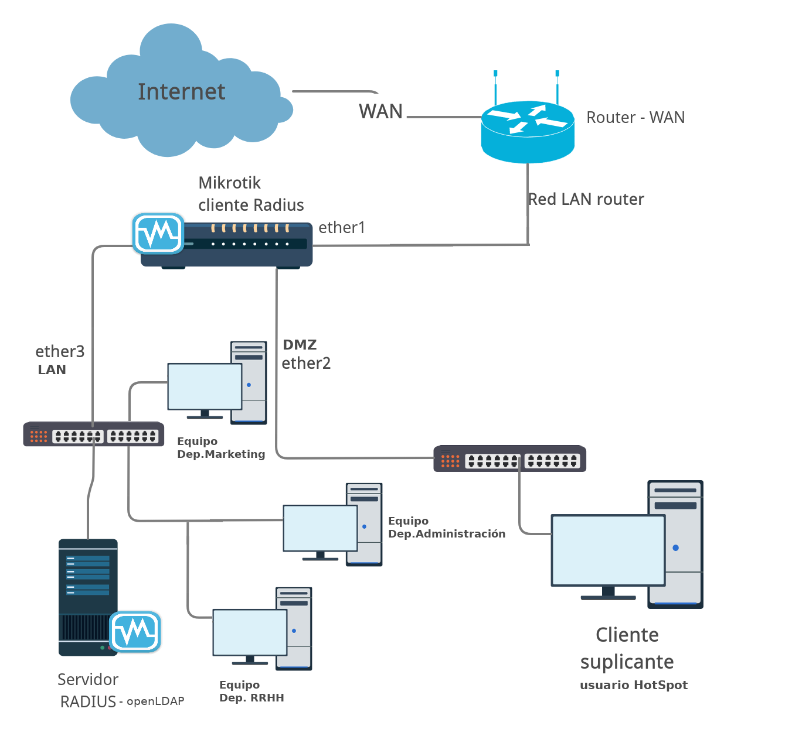Figura 1. Esquema de red de una organización con acceso a servidor radius mediante hotspot.
{kind=link}
2. Configuraciones previas
2.1 Desactivar servicios
En primer lugar, se pone en práctica lo aprendido en la unidad de trabajo 'Fortificación de equipos: Configuración de los sistemas informáticos', es decir, se van a desactivar los servicios del equipo mikrotik que no son necesarios. Habría que elegir qué servicio se deja activo dependiendo de cómo se va a gestionar el Mikrotik, es decir:
- Se deja el servicio Winbox abierto si se va a acceder al equipo mediante Windows.
- Se deja el servicio ssh si se accede en modo terminal.
- Se deja ej servicio www/puerto 80 si se accede vía http.
- Se deja el servicio www-ssl/puerto 443 si se accede por https.
Para este caso de ejemplo y dado que el administrador del sistema es usuario de un equipo Windows, se deja activo sólo el puerto de Winbox.
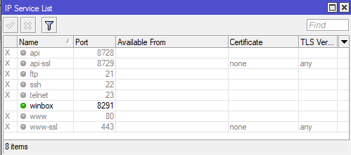
Figura 2. Servicios activados y desactivados en mikrotik.
Si se utiliza la consola, el comando para listar los servicios es el siguiente:
[admin@MikroTik] > ip service print
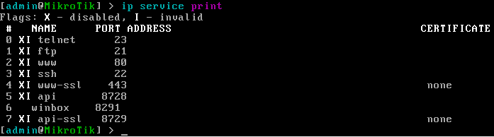
Figura 3. Servicios activados y desactivados en mikrotik.
Para desactivar un servicio, ejemplo el ssh (servicio 3), el comando es:
[admin@MikroTik] > ip service disable 3
2.2 Securización
A continuación, hay que cambiar el puerto 8291 de Winbox para evitar que se detecte que es un Mikrotik. Para este caso, se le asigna el puerto 10001.
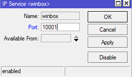
Figura 4. Cambio del puerto winbox.
Si se listan de nuevo los servicios, se puede observar que winbox ya está a la escucha en el puerto 10001.
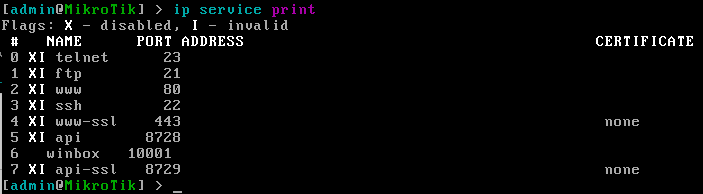
Figura 5. Servicios activados y desactivados en mikrotik.
También es conveniente desactivar el usuario admin y crear un nuevo usuario administrador, ejemplo:
- nombre: ad_mk01 (usuario administrador del router mikrotik 01).
- password: 8 caracteres (complejidad).
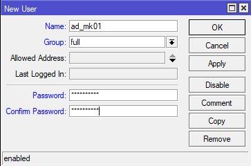
Figura 6. Creación de un nuevo usuario administrador.
Con esto se evita que se conozca el nombre del usuario por defecto de mikrotik, ya que cuando se realizan ataques al equipo, se suele utilizar como nombre admin.
Por último, se deshabilita el usuario admin.
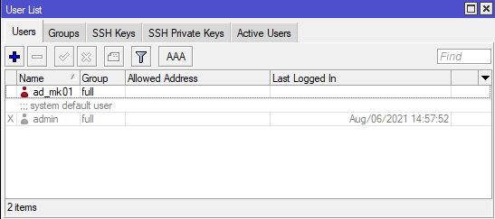
Figura 7. Vista de los usuarios.
2.3 Actualizar el equipo
El siguiente paso es comprobar la actualización del equipo, para ello, hay que acceder a System - Packages -- > “Check for updates”.
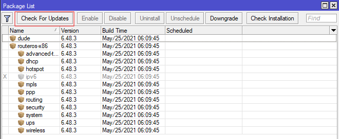
Figura 8. Actualización del equipo.
2.4 Interfaces
El nombrado de las interfaces, se realiza siguiendo el esquema de la figura 1, para este caso se nombra:
- ether1: Para la red WAN.
- ether2: Para la red DMZ.
- ether3: Para la red LAN que es donde se tendrán los equipos y servidores de la organización.
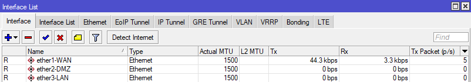
Figura 9. Nombrado de las interfaces.
2.5 VLANs
Partiendo del esquema de la figura 1, se crean 3 VLAN en la interfaz ether3, una para cada uno de los departamentos de la organización. También, se crea un VLAN (Servicios) para la red WAN.
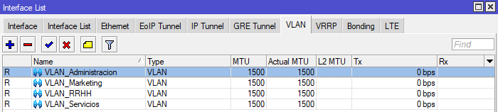
Figura 10. Configuración de las VLAN de cada departamento.
Si se accede de nuevo a las interfaces, ya aparecen las VLAN que se han creado anteriormente.
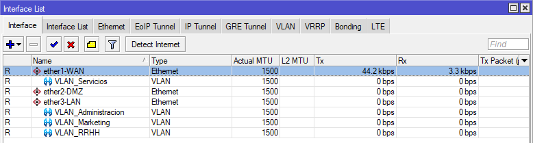
Figura 11. Lista de interfaces.
2.6 Segmentación
En este punto, se configuran las redes de cada una de las interfaces y de las 3 VLAN.
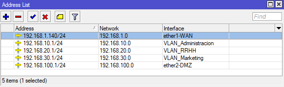
Figura 12. Ip-Address de las redes.
2.7 Crear servidores DHCP
Una vez se ha configurado el direccionamiento, hay que crear los servidores dhcp para cada una de las redes en DHCP Setup.
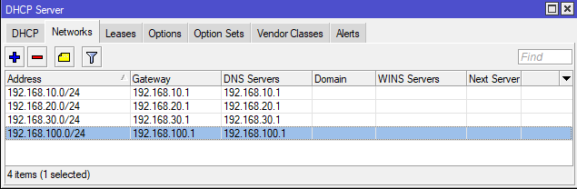
Figura 13. Servidores dhcp.
Por último, hay que ir a IP – DNS --> y habilitar “Allow Remote Requests”, para que pueda resolver las direcciones externas.
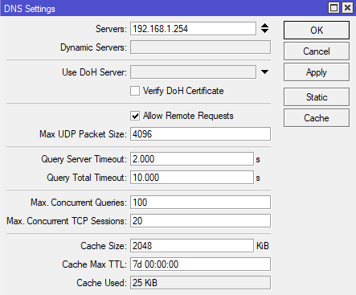
Figura 14. Activar la resolución de nombres
2.8 Acceso a internet de los equipos de la DMZ
Para que los equipos de la red DMZ puedan tener acceso a internet, hay que realizar un enmascaramiento. Para ello, hay que acceder a: IP – Firewall y seleccionar la pestaña NAT. Hay que realizar un “masquerade” en la interfaz WAN, por lo que hay que crear una nueva, el proceso es el siguiente:
- En Out Interface se elige la interfaz WAN.
- En el campo “Action” hay que elegir “masquerade”.
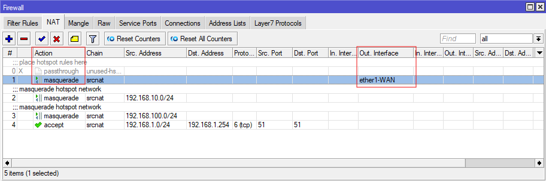
Figura 15. Agregar regla para la salida a internet de los equipos de la DMZ.
3. Hotspot en DMZ
En este punto, se va a establecer el hotspot en la DMZ, para ello, hay que acceder a IP – Hotspot y a continuación, en la pestaña 'Servers', se establece el hotspot sobre la DMZ.
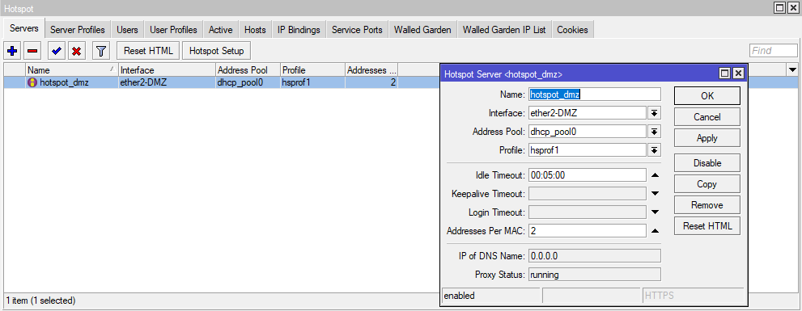
Figura 16. Configurar hotspot en DMZ.
En la pestaña 'Users', se pueden definir los usuarios que se necesiten donde es posible:
- Crear perfiles para grupos de usuarios (pestaña Users Profiles).
- Rate limit. Para limitar el ancho de banda (Para este caso se le establece a 100 Mbytes de RX y TX - ver figura 18).
| 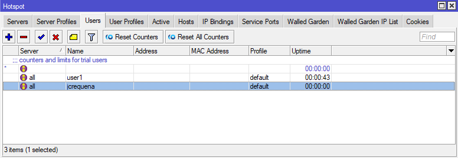 | 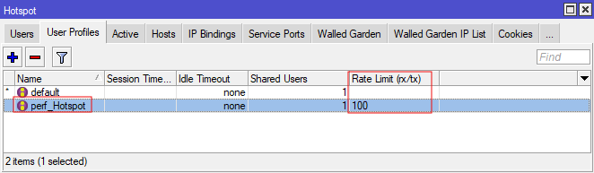 |
| Figura 17. Configurar usuarios para el acceso al hotspot. | Figura 18. Configurar perfil de usuarios. |
{kind=link}
{kind=link}
Una vez se ha creado el perfil, se accede al usuario y se le asigna el perfil creado.
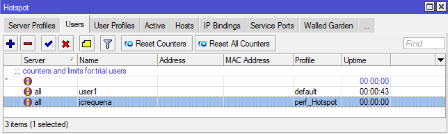
Figura 19. Usuario asignado al perfil.
Para aquellos equipos que no se pueden validar con usuario/contraseña se tiene la pestaña IP Bindings. Ejemplo: Si se desea añadir una impresora, hay que establecer la ip y máscara de la misma.
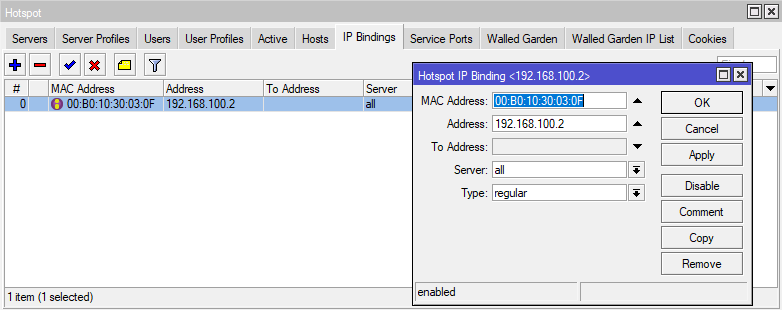
Figura 20. Añadir impresora por ip/mac.
4. Reglas del Firewall
Características de las Reglas:
- Chain:
- Forward: tráfico que pasa a través del router.
- Input: tráfico de entrada a nuestro Mikrotik.
- Output: tráfico de salida desde nuestro Mikrotik.
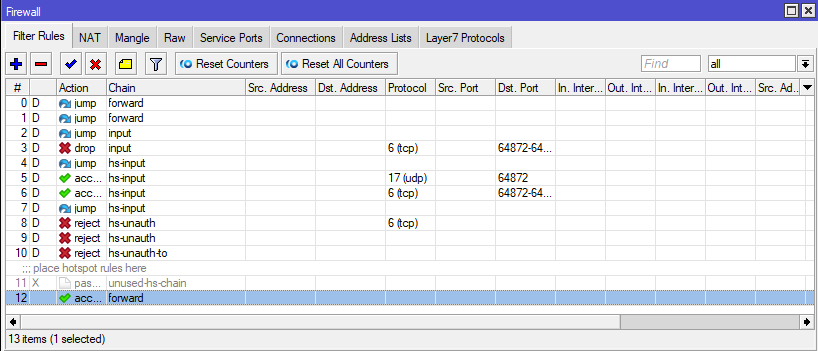
Figura 21. Lista de reglas.
- En Address List se puede crear un grupo de personas en base a la necesidad en concreto. Por ejemplo, si se pone una lista de "Bloqueados", se podría poner una IP o rango de red. Luego se podrían crear otras IPs de "Administradores", etcétera.
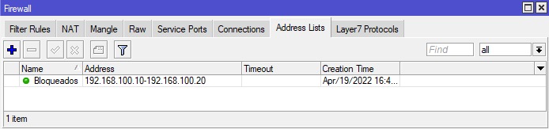
Figura 22. Lista de equipos bloqueados.
- En Filter Rules se pueden crear los filtros personalizados para bloquear, por ejemplo, para permitir o denegar algún servicio, o una lista de equipos, etcétera.
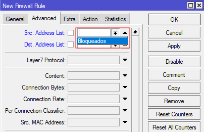
Figura 23. Uso de la lista de bloqueados en la regla.
Añadir nueva regla:
Generalmente, hay que rellenar los siguientes campos:
- Forward/Input/Output.
- Protocolo.
- Puerto.
- Si se quiere bloquear, hay que poner Drop (En la pestaña Action).
- En la pestaña Extra, se puede definir un rango de tiempo de cuando se quiere que se aplique la regla.
- Se puede aceptar el grupo de rango de IPs que se habían creado, creando una regla para permitir el tráfico a dichas IPs.

Si se quiere denegar el acceso al puerto tcp 22 (ssh), la regla quedaría así:
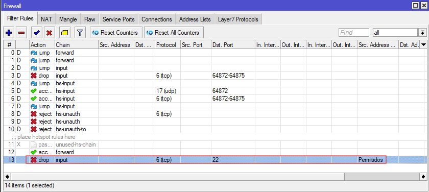
Figura 24. Regla creada de ejemplo.
5. Conclusiones
No es conveniente usar Mikrotik como Firewall si se tienen muchos equipos a no ser que el equipo sea muy potente. Las opciones serían las siguientes:
- Pequeña y Mediana empresa: PC + PfSense.
- Gran empresa: Firewall privativa.
6. Recursos
Obra publicada con Licencia Creative Commons Reconocimiento No comercial Compartir igual 4.0